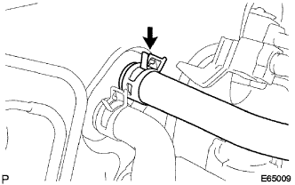
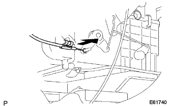
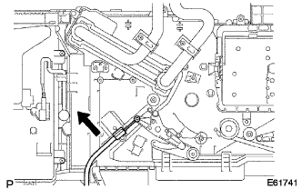
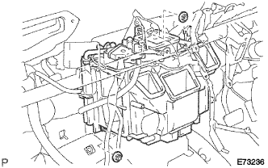

Hita radiator removal |
| 1. Hita Water Hose Inlet A separated |
|  |
Slip the clip and separate Hita Outin Retsu Horse A.
| 2. Hita Water Hose Outlet A separated |
Slip the clip and separate Hita Outlett Horse A.
| 3. Air conditioner brois ASSY removed |
reference)| 4. Air conditioner amplifier ASSY |
Cut the connector and remove the air conditioner amplifier ASSY.
| 5. Air duct RR No.2 separated (cold region specification car) |
Remove the two places of claws and separate the air duct RR No.2.
| 6. Air duct RR No.1 Cut off (cold district specification car) |
Remove the two places of claws and separate the air duct RR No.1.
| 7. Defrosta Dan Passolol Cable Sub-Asset removed (A / C manual) |
|  |
Pull the outer cable in the direction of the arrow and disconnect the outer cable from the clamp.
Remove the inner cable and remove the defrostadan passor cable.
| 8. Air Mix Dan Popular Cable SUB-ASSY removes (A / C manual) |
Pull the outer cable in the direction of the arrow and disconnect the outer cable from the clamp.
|  |
Remove the inner cable and remove the Air Mitsukusdan Papontrol cable.
| 9. Remove the heater radiator |
Cut each connector.
|  |
Remove the two nuts and remove the heater radara.